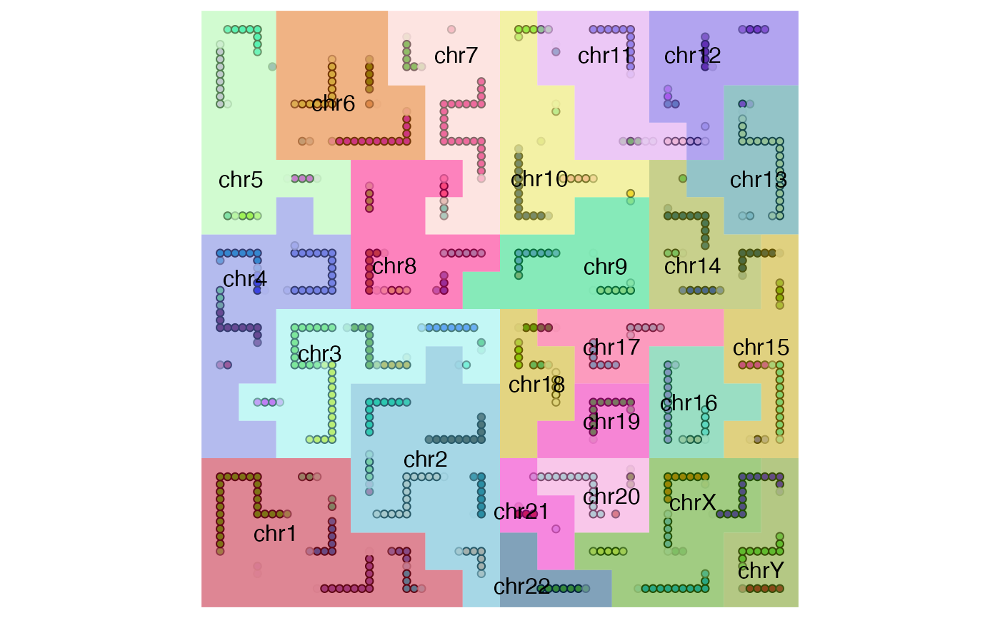
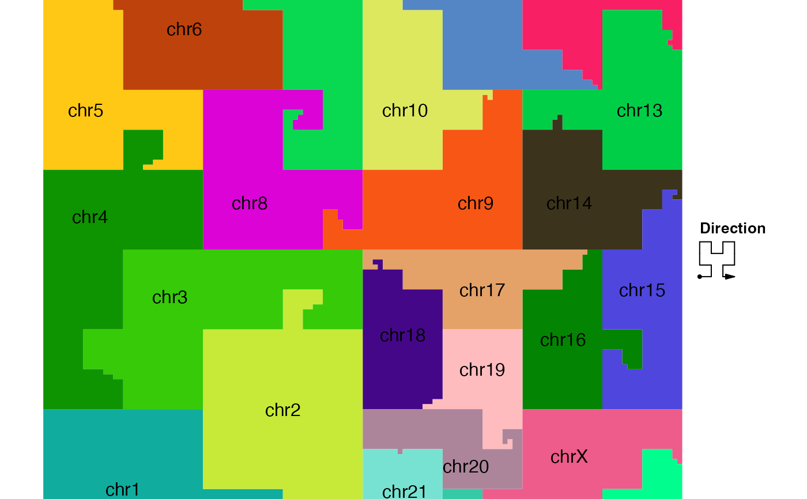

hc_map-GenomicHilbertCurve-method.RdDraw a map which represents positions of different chromosomes on the curve
# S4 method for GenomicHilbertCurve hc_map(object, level = 7, fill = rand_color(length(background), transparency = 0.5), border = NA, labels = names(object@background), show_labels = TRUE, labels_gp = gpar(), add = FALSE, ...)
| object | a |
|---|---|
| level | Since a map does not need to have high resolution, a value of around 7 would be enough. If |
| fill | colors for different chromosomes, or more generally, for different 'seqnames'. |
| border | colors for the borders of chromosomes. Set it to |
| labels | label for each chromosome, or more generally, for different 'sequences' |
| show_labels | whether show text labels |
| labels_gp | graphic settings for labels |
| add | whether add the map to the current curve or draw it in a new graphic device. Notice if |
| ... | pass to |
When multiple genomic categories (e.g. chromosomes) are drawn into one single Hilbert curve, a map which shows the positions of categories on the curve is necessary to distinguish different genomic categories.
Under "pixel" mode, if the map is directly added to the Hilbert curve, no chromosome name is drawn. The chromosome names are only drawn if the map is plotted in a new graphic device or added to the Hilbert curve under "normal" mode.
Just be careful if you directly overlay the map to the curve that the color of the map does not affect the original plot too much.
A GenomicHilbertCurve-class object
require(circlize) require(GenomicRanges) bed = generateRandomBed(nr = 100) gr = GRanges(seqnames = bed[[1]], ranges = IRanges(bed[[2]], bed[[3]])) hc = GenomicHilbertCurve()# add it in the same graphic device hc_map(hc, fill = rand_color(24, transparency = 0.5), add = TRUE)hc_map(hc, fill = NA, border = "grey", add = TRUE)